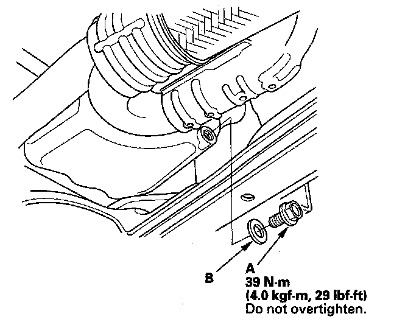
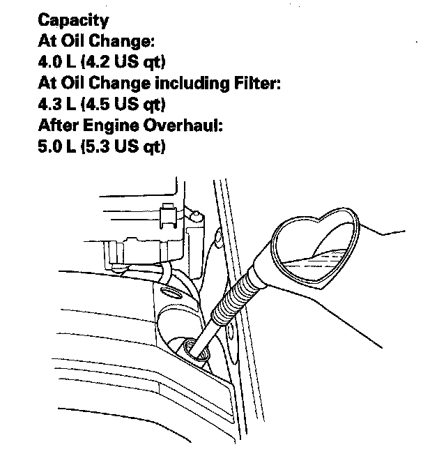

Engine Oil: Service and Repair
Engine Oil Replacement1. Warm up the engine.
2. Remove the drain bolt (A), and drain the engine oil.

3. Reinstall the drain bolt with a new washer (B).
4. Refill with the recommended oil.

5. Connect the Honda Diagnostic System (HDS) to the data link connector (DLC).
6. Turn the ignition switch ON (II).
7. Make sure the HDS communicates with the vehicle and the powertrain control module (PCM). If it doesn't communicate, troubleshoot the DLC circuit.
8. Select BODY ELECTRICAL with the HDS.
9. Select ADJUSTMENT in the GAUGES MENU with the HDS.
10. Select RESET in the MAINTENANCE MINDER with the HDS.
11. Select RESETTING THE ENGINE OIL LIFE with the HDS.
NOTE: If you changed the ATF at the same time with the engine oil, select RESETTING THE ENGINE OIL LIFE AND ATF with the HDS instead.
12. Run the engine for more than 3 minutes, then check for oil leakage.
13. Reset the multi-information display.